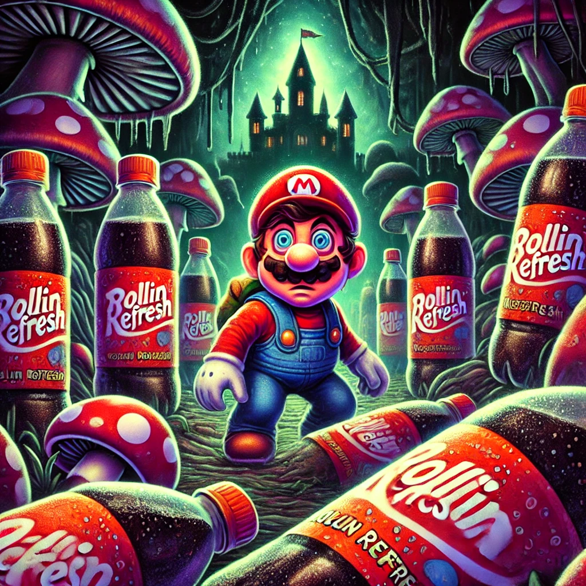
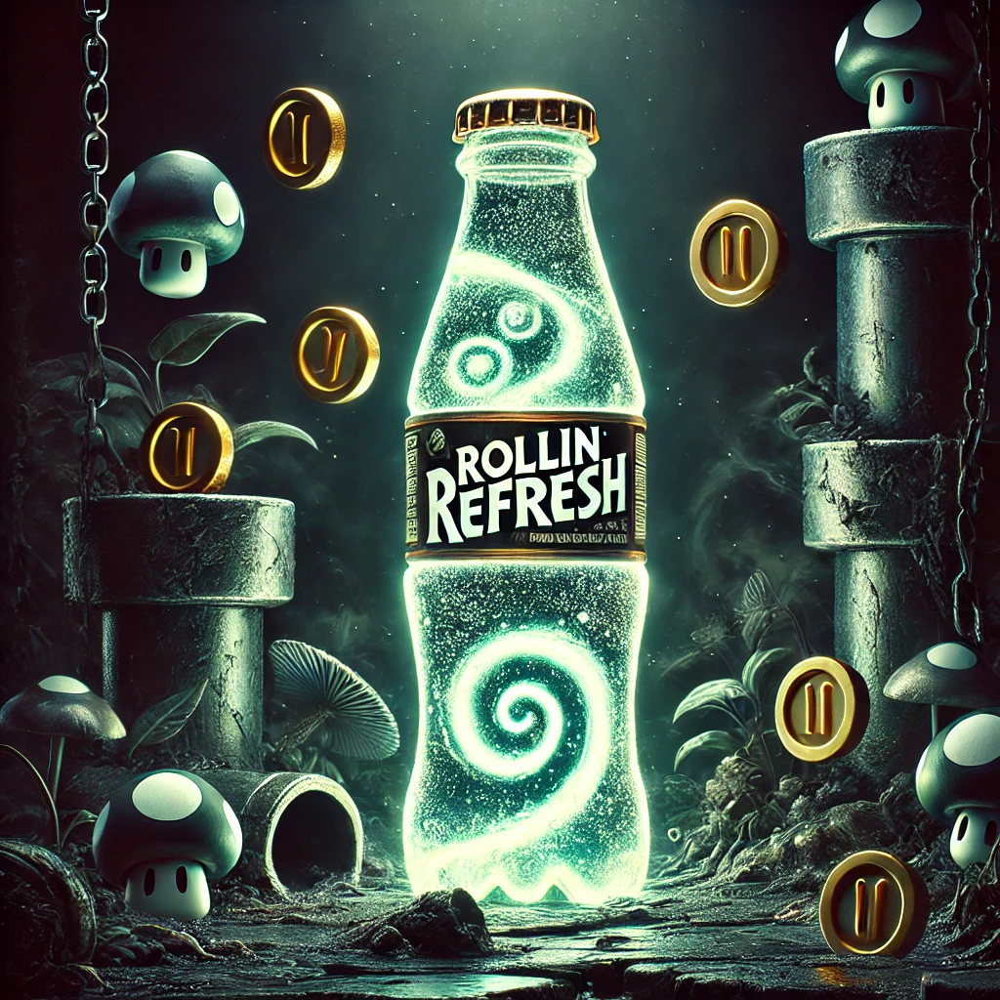
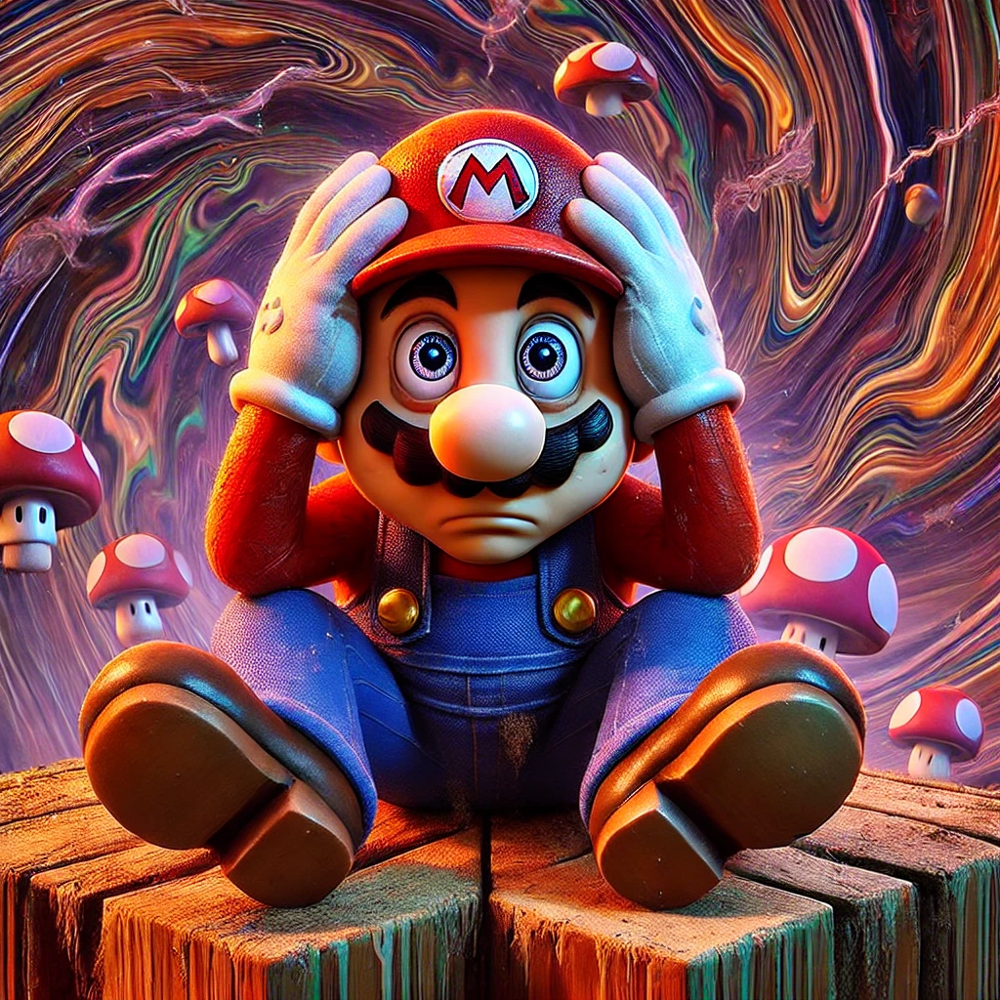

Home
Welcome to The Hidden Truth Behind Mario’s Quest, the ultimate fan page where we uncover the untold stories and hidden secrets lurking beneath the surface of one of gaming’s most iconic franchises. Mario’s adventures have always been celebrated as heroic quests to save Princess Peach and defeat the evil Bowser, but what if there’s more to his journey than meets the eye? What if Mario's mission isn’t just about saving the Mushroom Kingdom, but about uncovering a deeper, darker truth that’s been buried all along?


